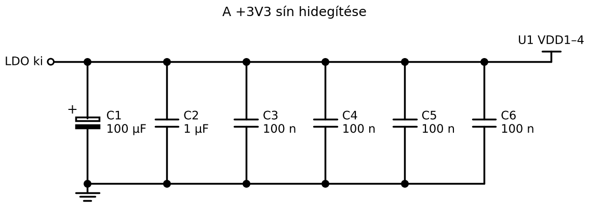
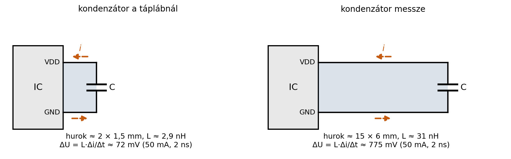
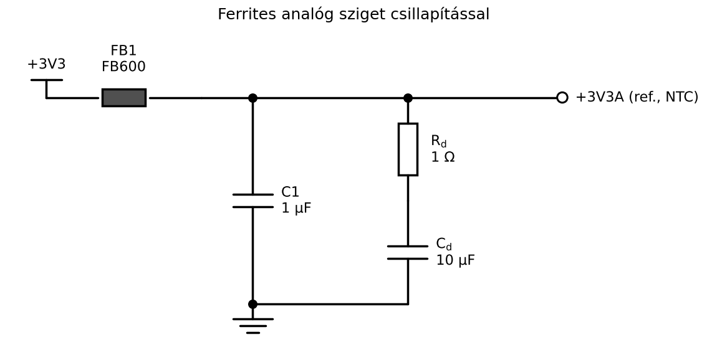
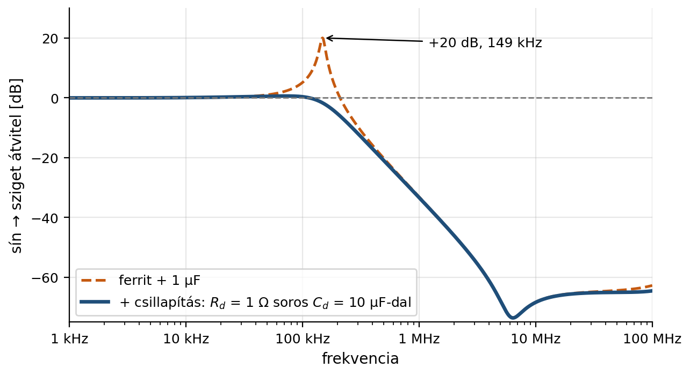

Ebben az alfejezetben megtanulod, hogy
A tápintegritás (power integrity) azt vizsgálja, hogy a tápfeszültség a fogyasztó lábán minden pillanatban elég közel marad-e a névleges értékhez.
A szenzormodul +3V3 sínje legfeljebb 200 mA-t ad. A mikrovezérlő áramfelvétele munka közben ugrál (30 mA tipikus, 80 mA csúcs), a rádió- vagy kimeneti blokkok még nagyobb lépésekkel. Tegyük fel a legrosszabbat: a sínen az áram 0,2 A-t ugrik 7 ns alatt (mintaadat). Ha az LDO-tól a fogyasztóig vezető huzalozás induktivitása csak 20 nH (néhány centiméternyi hurok, mintaadat), a feszültségesés
A 3,3 V 17%-a tűnik el egy pillanatra: a vezérlő újraindulhat, és a ratiometrikus NTC-mérés (az ADC referenciája éppen ez a sín, lásd DAC, PWM, feszültségreferenciák és ratiometrikus mérés) zajos lesz. A szabályzó ilyen gyorsan nem tud közbelépni. A megoldás: töltést tárolunk közel a fogyasztóhoz. Ez a hidegítés (decoupling), az eszköze a hidegítő kondenzátor.
Gondolj a tápfeszültségre úgy, mint a víznyomásra. A távoli szivattyú (szabályzó) sok vizet ad, de a hosszú csőben lévő víz tehetetlensége miatt lassan reagál. A ház tartálya (bulk kondenzátor, a nagyobb tároló) gyorsabb, a csap melletti kis edény (helyi MLCC, többrétegű kerámiakondenzátor) azonnal ad, de hamar kiürül. Mindegyik a következő, lassabb szintet „fedezi”, amíg az odaér. Az analógia határa: a kondenzátorok nem csak sorban töltődnek újra, hanem egymással rezeghetnek is – erre a víznél nincs jó kép, pedig ez a hidegítés legnagyobb csapdája.

Gondolkodj előre: a fogyasztó hirtelen 200 mA-t kér. Az első néhány nanoszekundumban melyik forrás adja a töltést: a szabályzó, a 100 µF-os, vagy a 100 nF-os kondenzátorok? Miért?
A fenti ábra (logaritmikus időtengely!) megadja a választ: az elején a legkisebb induktivitású helyi kerámiák dolgoznak, 100 ns körül a 100 µF-os polimer kondenzátor veszi át, és csak 10–20 µs-nál a szabályzó. A sorrendet nem a kapacitás, hanem az áramút induktivitása szabja meg: az áram az induktivitáson nem ugorhat. A negatív áram azt jelzi, hogy egy kondenzátor épp visszatöltődik egy másikból – ekkor leng a rendszer.
Ha egy kondenzátor áramot ideig egyedül fedez, a feszültsége -t esik (az ESR-t és ESL-t most nem nézzük):
Mértékegység: . Ha a lassabb forrás 1 µs múlva segít, 0,2 A-hez és 99 mV-os eséshez legalább 2 µF kell; 10 µs-nál már 20 µF.
A fogyasztó oldaláról nézve a tápháló (szabályzó, vezetékek, kondenzátorok) egy frekvenciafüggő impedancia, . Egy áramváltozás frekvenciaösszetevői feszültségingadozást keltenek: .
Definíció. A célimpedancia (target impedance) az a legnagyobb tápháló-impedancia, amely mellett a megengedett tranziens áram még nem okoz a megengedettnél nagyobb feszültségingadozást:
Mértékegység: V/A = Ω. A követelmény: az egész érdekes frekvenciasávban.
Tehát , a sáv 10 kHz–50 MHz. A kritérium szigorú: bármilyen áramalakra (akár egy éppen rezonáns frekvencián ismétlődőre is) garantál; egyetlen ugrásra gyakran kevesebb is elég lenne.
| Frekvenciatartomány (nagyságrend) | Ki tartja alacsonyan az impedanciát |
|---|---|
| 0 – néhányszor 10 kHz | a szabályzó (LDO, buck) visszacsatolása |
| kb. 10 kHz – 1 MHz | bulk kondenzátor (µF-tól néhány száz µF-ig) |
| kb. 1 – 100 MHz | helyi MLCC-k (100 nF – 10 µF), kis hurokkal |
| 100 MHz fölött | a tok és az IC belső kapacitása, a lap síkjai – a rajzon nem szabályozható |
A szabályzót itt egyszerű soros – modell helyettesíti (50 mΩ, 1 µH, mintamodell). Impedanciája , amely kb. 78 kHz-nél éri el a 0,5 Ω-ot: fölötte kondenzátor nélkül nem teljesül a cél. A valódi szabályzó viselkedése a szabályzóhuroktól és a kimeneti kondenzátortól függ (Teljesítménymérleg, lineáris szabályzó és LDO); mindig nézd meg az adatlap kondenzátor-követelményét.
A A valós kondenzátor: ESR, ESL, önrezonancia, élettartam szerint minden kondenzátor soros –ESR–ESL lánc, amelyhez a bekötés induktivitása adódik:
Az önrezonancia
alatt a kondenzátor kapacitív, fölötte
induktív – de induktívan is alacsony impedanciájú
lehet. A
mindig a tényleges (DC-előfeszítés utáni) érték: a
mintaadatok szerint a 22 µF-os X5R 3,3 V-on 13 µF, az 1 µF-os 0,7 µF, a
100 nF-os 90 nF. (Ezek az elkit.pdn tápháló-modelljének
mintaadatai. A Kondenzátorfajták és
dielektrikumok alfejezetben használt elkit.parts görbe
ugyanerre a 22 µF-ra 15,6 µF-ot ad; ez két külön mintamodell, valódi
tervben a konkrét alkatrész adatlapja dönt, tartalékhoz pedig a kisebb
értékkel érdemes számolni.)
Magas frekvencián az az úr, és azonos kondenzátor párhuzamosan -et ad. 50 MHz-en egy 100 nF-os ág () 0,28 Ω, négy párhuzamosan 0,07 Ω.
Két különböző ág között van egy frekvenciasáv, amelyben az egyik már induktív, a másik még kapacitív. Ekkor párhuzamos rezgőkört alkotnak (Rezonancia, jóság és sávszűrők), és az eredő impedancia csúcsot ad. Ez az antirezonancia. Közelítőleg ott van, ahol a két ág reaktanciája ellentett (), a csúcs pedig
A veszteség (ESR) tehát csillapít: a nagyobb ESR alacsonyabb, szélesebb csúcsot ad. A „minél kisebb ESR, annál jobb” itt nem igaz.
Ugyanez történik a szabályzó induktivitása és a bulk kondenzátor között. Ha az tápmodell és a kondenzátor soros veszteségeinek összege , a csúcs frekvencián
A közelítés akkor jó, ha .
A négy készlet tanulsága:
A „végső” itt a tápintegritás szempontját jelenti. A +3V3 sínt tápláló LDO (a fiktív XL3300, Az adatlap olvasása) a stabilitáshoz 1–47 µF tényleges kimeneti kapacitást enged meg (mintaadat), ezt a 100 µF-os készlet túllépi. A Tervezési átvizsgálás és átadás a NYÁK-tervezésnek éppen ezt találja meg, és a polimert 33 µF-osra (ESR kb. 40 mΩ) cseréli, amellyel a célimpedancia még teljesül (). Tanulság: az egyik blokk jó megoldása sértheti a szomszéd blokk korlátját.
Továbbvitt eredmény. A tápháló követelménye a sávban; a készletet a bulk (szabályzóval való antirezonancia, csillapítás), a helyi MLCC-k (darabszám az induktivitás miatt) és a közöttük lévő csúcsok vizsgálatával választjuk, a tényleges kapacitásokkal. Ezt a Kapcsolási rajz konvenciói és a NYÁK-tervezőnek átadott kényszerek, a Tervezési átvizsgálás és átadás a NYÁK-tervezésnek, az 1. záróprojekt: védett tápegység 12 V-ról 5 V-ra és 3,3 V-ra és a 2. záróprojekt: érzékelő-illesztő és mérőlánc használja.
A szabály jó kiindulópont: a régebbi, nagyobb tokok idején a 100 nF körüli kerámia olcsó és nagyfrekvencián is jól használható érték volt, és a gyakorlat rögzült. Nem fizikai törvény. A mai kis tokokban egy 1 µF-os kondenzátor induktivitása alig nagyobb a 100 nF-osénál, mégis tízszer annyi töltést tárol; a nagyfrekvenciás viselkedést a tok és a bekötés induktivitása adja, nem az érték. Követendő sorrend: (1) az IC adatlapja (értékek, darabszám, lábak); (2) a sín célimpedanciája; (3) a görbe ellenőrzése. Többféle érték keverése új antirezonanciákat is hozhat.

A gyors áram a kondenzátorból a VDD lábon be, a GND lábon ki, és vissza a kondenzátorba folyik. Ennek a huroknak a területe adja az induktivitást (Földelési stratégiák és visszatérő áramutak): a hurokterület a zaj antennája. Mintageometriával (huzalhurok becslése) 50 mA-es, 2 ns-os ugrásnál a 2×1,5 mm-es hurok kb. 3 nH-t és 72 mV-ot, a 15×6 mm-es 31 nH-t és 0,8 V-ot jelent. Ugyanaz a kondenzátor, más eredmény. Ezért elv: minden tápláb-párhoz a legrövidebb úton, saját, rövid GND-csatlakozással kerüljön a kondenzátor. A megvalósítás a NYÁK-tervezés dolga, a kapcsolási rajzon a követelményt rögzítjük.
Zajra érzékeny analóg részt (referencia, érzékelő) gyakran ferritgyönggyel választanak le (Zajszűrés: RC, LC, ferrit, közös módusú fojtó, árnyékolás). A nagyfrekvenciás zajt a ferrit disszipálja, de kis frekvencián induktivitás, amely a sziget kondenzátorával rezgőkört alkot. Ezt a rezonanciát és csillapítását a Rezonancia, jóság és sávszűrők a +3V3A analóg sínen már kiszámolta; itt ugyanazt a szűrőt a tápintegritás szemével nézzük:

Az 1 µF-os X7R 3,3 V-on a mintagörbe szerint 0,95 µF, a ferrit mintamodell induktivitása 1,2 µH, így a rezonancia -en van. Csillapítás nélkül a sín zaja itt +20 dB-lel, tízszeresen jut a szigetre. Az és a vele sorba kötött (tényleges 8,6 µF) a csúcsot +0,6 dB-re fogja vissza; az 500 kHz-es kapcsolási frekvencián mindkét változat kb. 20 dB-t csillapít. A kondenzátor megválasztása számít: a Valós induktivitás és ferritgyöngy 10 µF-os változata 0,2 A egyenárammal kb. háromszoros csúcsot ad 50 kHz körül, és 500 kHz-en kb. századrészére (0,0102) csökkenti a zavart.

A tápintegritás második kérdése a sziget saját impedanciája a fogyasztói felől: csillapítás nélkül a 10 kHz–50 MHz sávban legfeljebb 9,2 Ω, csillapítva 0,91 Ω (lásd a kódot). Egy 5 mA-es sziget-áramugrás mellett (mintaadat) a célimpedancia kb. 20 Ω, tehát ezt a csillapítatlan szűrő is teljesítené – mégis rossz, mert a sínről érkező zajt tízszeresre erősíti. Az átvitelt és az impedanciát külön kell ellenőrizni.
A sziget azért is kellhet, mert a műveleti erősítő és a referencia tápfeszültség-elnyomása (PSRR, Valós paraméterek: offset, zaj, sávszélesség, slew rate, stabilitás) a frekvencia növekedtével romlik: a megahertzes tápzaj átjut a jelútra. Figyelj két dologra: ratiometrikus mérésnél az NTC-osztó és az ADC-referencia ugyanazon a (szigetelt) ágon legyen, és a ferrit DC-árama ne vigye telítésbe (Valós induktivitás és ferritgyöngy).
Továbbvitt eredmény. A kapcsolási rajzon rögzítendő hidegítési szabályok: (1) minden tápláb-pár kondenzátora a láb mellé rajzolva, megjegyzéssel („U1 VDD2 lábához, rövid hurok”); (2) érték, dielektrikum, névleges feszültség és a tényleges kapacitás; (3) bulk a szabályzó, illetve a belépési pont mellé, a csillapítás (ESR-tartomány vagy soros ellenállás) előírásával; (4) ferrit mögött helyi kondenzátor és csillapítás. A Kapcsolási rajz konvenciói és a NYÁK-tervezőnek átadott kényszerek ezt a kényszerlistába veszi, a Tervezési átvizsgálás és átadás a NYÁK-tervezésnek ellenőrzi.
Józanész-ellenőrzés: a 20 µs körüli szabályzó-átvételhez 0,2 A és 99 mV mellett kb. 40 µF-nyi töltés kellene – a 100 µF ezt bőven adja, a 13 µF-os kerámia nem.
A célimpedanciát és a három fontos készletet az
elkit.pdn modullal számoljuk. A készleteket (a 100 µF, 22
µF, 1 µF és 100 nF darabszámát) az extra_elch23 modul
keszlet függvénye adja:
from elkit import pdn
from elkit import extra_elch23 as k
zt = pdn.target_from_tolerance(3.3, k.TURES_3V3, k.DELTA_I)
f = pdn.log_frequencies(1e3, 5e8, 300)
print(f"Z_cél = {zt:.3f} Ω, sáv: {k.F_PDN_MIN / 1e3:.0f} kHz – {k.F_PDN_MAX / 1e6:.0f} MHz")
for name, cfg in [("4x100n", (0, 0, 0, 4)), ("22u+4x100n", (0, 1, 0, 4)),
("polimer+1u+4x100n", (1, 0, 1, 4))]:
br = k.keszlet(*cfg)
ratio = pdn.worst_ratio(br, zt, k.F_PDN_MIN, k.F_PDN_MAX, k.REG)
peaks = pdn.antiresonances(f, pdn.impedance(f, br, k.REG))
txt = "; ".join(f"{fp / 1e3:.0f} kHz {zp:.2f} Ω" for fp, zp in peaks)
print(f"{name:18s} max|Z|/Z_cél: {ratio:5.2f}; csúcs: {txt}")Z_cél = 0.495 Ω, sáv: 10 kHz – 50 MHz
4x100n max|Z|/Z_cél: 86.06; csúcs: 265 kHz 48.27 Ω
22u+4x100n max|Z|/Z_cél: 2.80; csúcs: 43 kHz 1.39 Ω; 5935 kHz 0.34 Ω
polimer+1u+4x100n max|Z|/Z_cél: 0.31; csúcs: 15 kHz 0.15 Ω; 2268 kHz 0.12 Ω; 9397 kHz 0.07 ΩAz első sorban a csúcs 48 Ω, vagyis a célimpedancia közel
százszorosa; a worst_ratio ritkább rácson (100 pont/dekád)
mintavételez, ezért ezt az éles csúcsot kissé alábecsüli (86 a 97
helyett) – éles rezonanciánál sűrű rácsot használj. Az időtartományban a
legnagyobb esés egy 0,2 A-es, 7 ns-os ugrásra:
for name, cfg in [("4x100n", (0, 0, 0, 4)), ("22u+4x100n", (0, 1, 0, 4)),
("polimer+1u+4x100n", (1, 0, 1, 4))]:
t, du, i_agak, i_reg = k.aramugras(k.keszlet(*cfg))
i = du.argmin()
print(f"{name:18s} legnagyobb esés {-du[i] * 1e3:5.0f} mV, {t[i] * 1e6:5.2f} µs-nál")4x100n legnagyobb esés 334 mV, 0.95 µs-nál
22u+4x100n legnagyobb esés 56 mV, 6.02 µs-nál
polimer+1u+4x100n legnagyobb esés 20 mV, 15.91 µs-nálA 22 µF-os készlet egy egyszeri ugrásra megfelel (56 mV < 99 mV), pedig az impedanciakritérium elutasítja. Nincs ellentmondás: ha a fogyasztó ismételten, éppen 43 kHz körül kapcsolja a 200 mA-t, a rezonancia felépül, és az ingadozás kb. amplitúdójú lesz (a négyszög alapharmonikusával számolva). A célimpedancia az ilyen legrosszabb esetre tervez.
A ferrites +3V3A sziget (átvitel a sín felől, ideális forrással, és impedancia a fogyasztó felől, a teljes +3V3 tápháló mögött):
from elkit import parts
import numpy as np
fb = parts.ferrite("FB600")
c1 = parts.mlcc("1u_0603_X7R_25V").capacitance(3.3)
cd = parts.mlcc("10u_0805_X7R_16V").capacitance(3.3)
local = pdn.branch_impedance(f, pdn.Branch("C1", c1, esr=0.01, esl=0.7e-9))
damp = 1.0 + pdn.branch_impedance(f, pdn.Branch("Cd", cd, esr=0.005, esl=0.8e-9))
z_up = fb.impedance(f) + pdn.impedance(f, k.keszlet(), k.REG) # ferrit + +3V3 sín
band = (f >= k.F_PDN_MIN) & (f <= k.F_PDN_MAX)
for name, zc in [("csak 1 µF", local),
("+ 1 Ω és 10 µF", pdn.parallel_impedance(local, damp))]:
h = np.abs(zc / (zc + fb.impedance(f)))
z = np.abs(pdn.parallel_impedance(zc, z_up))
print(f"{name:15s} átvitel max. {20 * np.log10(h.max()):5.1f} dB "
f"({f[h.argmax()] / 1e3:.0f} kHz), sziget |Z| max. {z[band].max():4.2f} Ω")csak 1 µF átvitel max. 20.0 dB (149 kHz), sziget |Z| max. 9.21 Ω
+ 1 Ω és 10 µF átvitel max. 0.6 dB (72 kHz), sziget |Z| max. 0.91 Ωpdn.choose_decoupling mohó algoritmusával. Mit ellenőriznél
még, mielőtt a rajzra írod?A gyors áramugrásokat a fogyasztó közelében tárolt töltés fedezi; a sorrendet az áramút induktivitása szabja meg: helyi MLCC, bulk, végül a szabályzó. A tápháló követelménye a -ig terjedő sávban. A kondenzátor –ESR–ESL lánc a tényleges (DC-bias utáni) kapacitással; párhuzamos ágak között, illetve a szabályzó induktivitása és a bulk között antirezonancia keletkezik, amelyet a veszteség (ESR, soros ellenállás) csillapít. A „100 nF minden lábra” kiindulópont, nem törvény. Az elhelyezésnél a hurokterület a döntő. A ferrites sziget csillapítás nélkül rezonálhat. A kapcsolási rajzon az értéket, a helyet és a csillapítást is rögzítjük.
1. . .
2. .
3. 1 nH: egy ág , , tehát 2. 3 nH: , , tehát 4. Háromszoros induktivitáshoz háromszoros darabszám kell; a felfelé kerekítés miatt itt 2-ről 4-re nő.
4. , , . A 4×100 nF-os ág: , . (A teljes készlet görbéjén ez a csúcs 9,4 MHz-nél 0,07 Ω.)
5. , : a becslés szerint megfelel. (A feltétel csak nagyjából teljesül, ezért szimulációval ellenőrizendő.)
6.
zt5 = pdn.target_from_tolerance(5.0, 0.05, 0.5)
sel = pdn.choose_decoupling(zt5, k.F_PDN_MIN, k.F_PDN_MAX, regulator=k.REG)
print(sel.table())kondenzátor db C/db (F) SRF (MHz)
1 uF 0402 1 7e-07 5.87
100 uF polimer 1 0.0001 0.252
max |Z|/Z_cél = 0.52 → megfelelA mohó algoritmus csak az impedanciakritériumot nézi, és a legkevesebb alkatrész közelébe jut. Ellenőrizni kell még: az IC-k adatlapi hidegítési előírásait (táplábankénti kondenzátor akkor is, ha az impedanciagörbe nélküle jó), a tényleges kapacitást 5 V-on (a minta c_effective 3,3 V-ra vonatkozik), a feszültség- és hőmérsékleti tartalékot, a polimer hullámáramát, a bekötés valós induktivitását és a szabályzó stabilitási feltételeit.
7. Példa (a tápintegritási készletre; az LDO kapacitáskorlátja miatt a C1 az átvizsgálás után 33 µF): „C1 (100 µF polimer, ≥ 10 V, ESR 15–40 mΩ): a U2 LDO kimenetéhez. C2 (1 µF X7R, 0402): U1 VDD1 mellé. C3–C6 (100 nF X7R, 0402): U1 VDD1…VDD4 lábpáronként egy, a lábtól a legrövidebb úton, saját GND-átvezetéssel, a hurok nem megy át más vezetéken. FB1 (≥ 600 Ω @ 100 MHz, névleges áram ≥ 0,5 A) a +3V3 és +3V3A között; mögötte C7 (1 µF X7R) a referencia lábánál, és R1 (1 Ω) soros C8 (10 µF X7R) a sziget belépésénél. NTC-osztó és ADC-referencia a +3V3A-ról.” Az értékek és határok a számításból és az adatlapokból; a Kapcsolási rajz konvenciói és a NYÁK-tervezőnek átadott kényszerek adja a formát.